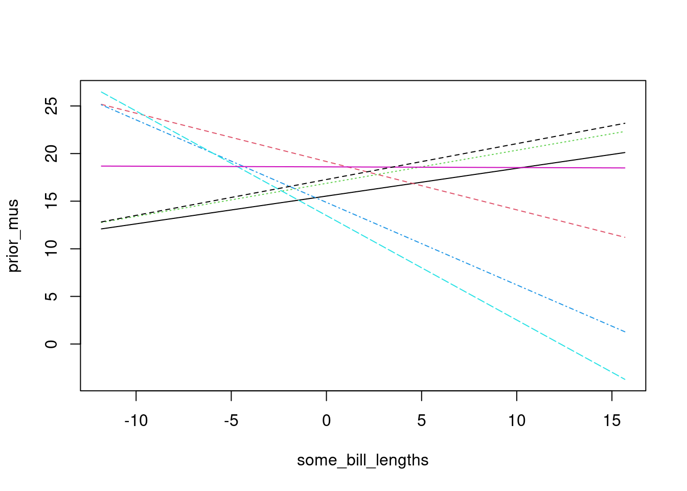
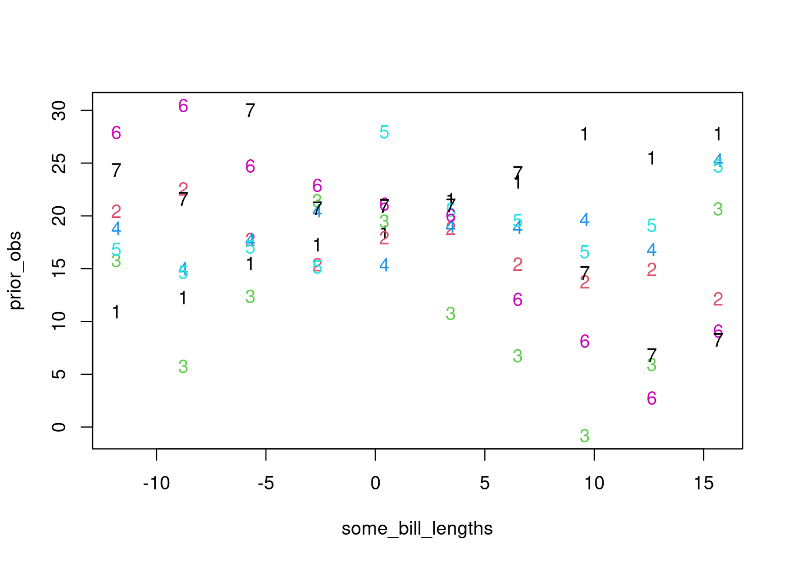
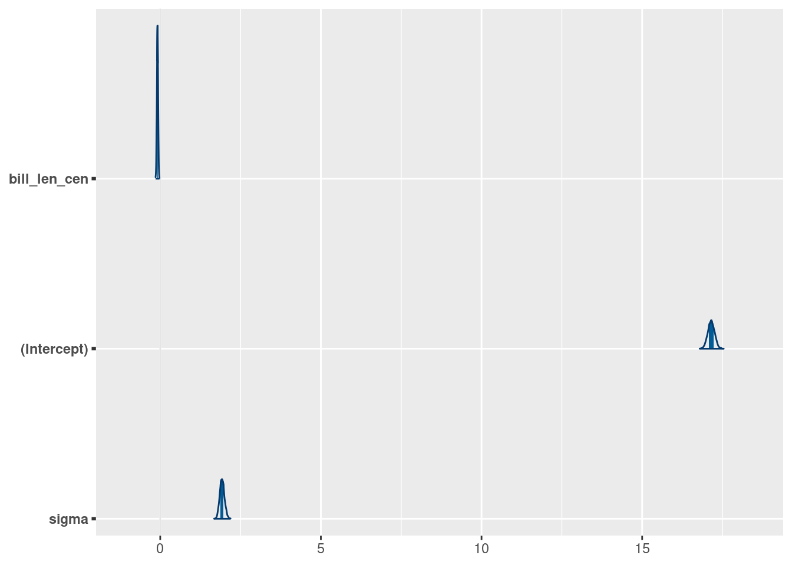
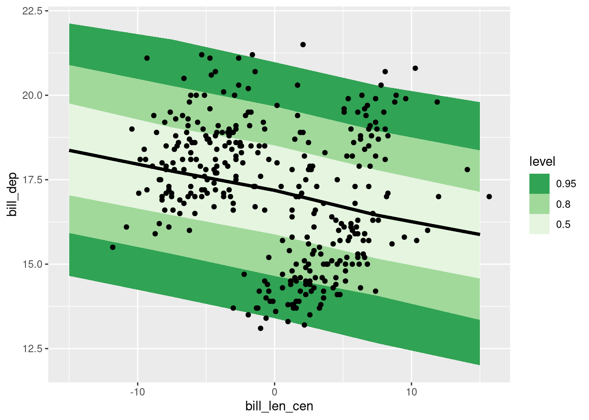

library(ggplot2)
suppressPackageStartupMessages(library(dplyr))
library(tidybayes)
suppressPackageStartupMessages(library(rstanarm))Univariate regression
The shortest route to science is a straight line.
Load packages and data
Statistical models of Penguin bill morphology.
We’ll be studying the relationship between two numbers about penguin bills. Specifically, we’ll ask “Are longer bills also deeper?”. This question might not be the most interesting ecologically, but it is a great chance to practice some interesting stats.
Let’s begin with plotting the data:
penguins |>
ggplot(aes(x = bill_len, y = bill_dep)) +
geom_point() +
stat_smooth(method = "lm")`geom_smooth()` using formula = 'y ~ x'Warning: Removed 2 rows containing non-finite outside the scale range
(`stat_smooth()`).Warning: Removed 2 rows containing missing values or values outside the scale range
(`geom_point()`).
palmerpenguins dataset.Let’s write a simple statistical model for these data:
\[ \begin{align} \text{Bill depth}_i &\sim \text{Normal}(\mu_i, \sigma) \\ \mu_i &= \beta_0 + \beta_1\times\text{Bill length}_i \\ \beta_0 &\sim \text{Normal}(??) \\ \beta_1 &\sim \text{Normal}(??) \\ \sigma &\sim \text{Exponential}(??) \end{align} \]
What should our priors be? Before we can answer that, we have a more important question:
WHERE IS ZERO??
It has to be somewhere. Does it make sense? take control and choose for yourself.
If we fit a model like this without thinking about the location of zero, we get some pretty silly answers:
coef(lm(bill_dep ~ bill_len, data = penguins))(Intercept) bill_len
20.88546832 -0.08502128 When the value of bill length is 0, the average of the response is the intercept:
\[ \begin{align} \mu_i &= \beta_0 + \beta_1\times\text{Bill length}_i \\ \mu_i &= \beta_0 + \beta_1\times0 \\ \mu_i &= \beta_0 \\ \end{align} \]
But, if we take the data as we found it, we’re going to be talking about \(\beta_0\) as the depth of a penguin’s bill when the bill has 0 length! Clearly that isn’t a very meaningful value. From the point of view of setting priors and interpreting coefficients, it helps a lot to set a meaningful 0.
A very common choice is to subtract the average from your independent variable, so that penguins with an average bill length now have an average of 0:
\[ \begin{align} \text{Bill depth}_i &\sim \text{Normal}(\mu_i, \sigma) \\ \mu_i &= \beta_0 + \beta_1\times(\text{Bill length}_i - \overline{\text{Bill length}})\\ \beta_0 &\sim \text{Normal}(??) \\ \beta_1 &\sim \text{Normal}(??) \end{align} \]
Now \(\beta_0\) means the average bill depth at the average bill length. It becomes easier to think about priors:
\[ \begin{align} \text{Bill depth}_i &\sim \text{Normal}(\mu_i, \sigma) \\ \mu_i &= \beta_0 + \beta_1\times(\text{Bill length}_i - \overline{\text{Bill length}})\\ \beta_0 &\sim \text{Normal}(17,2) \\ \beta_1 &\sim \text{Normal}(0,.5) \\ \sigma &\sim \text{Exponential}(0.5) \end{align} \]
Exercise
What continuous predictors have you used in your analysis? How would you find a biologically meaningful zero? Think about how you would center time, age, mass, fitness etc.
Prior predictive simulations
Armed with this model, it becomes much easier to think about prior predictions.
We’ll make a bunch of lines implied by the equation above. There’s two steps:
- Center the predictor
- Make up a vector that goes from the minimum to the maximum of the predictor. This is just for convenience!
bill_len_centered <- with(penguins,
bill_len - mean(bill_len,
na.rm = TRUE))
## make up a short vector
some_bill_lengths <- seq(
from = min(bill_len_centered, na.rm = TRUE),
to = max(bill_len_centered, na.rm = TRUE),
length.out = 10
)
Shortcuts to these common tasks
These tasks are so common that they are automated in helper functions.
For centering predictors, see the base R function ?scale (however, doing this by hand is often more convenient)
For creating a short vector over the range of a predictor, see modelr::seq_range. The R package modelr has many different functions to help with modelling.
To simulate, we’ll use some matrix algebra, as we saw in lecture:
slopes <- rnorm(7, 0, .5)
inters <- rnorm(7, 17, 2)
X <- cbind(1, some_bill_lengths)
B <- rbind(inters, slopes)
knitr::kable(head(X))| some_bill_lengths | |
|---|---|
| 1 | -11.8219298 |
| 1 | -8.7663743 |
| 1 | -5.7108187 |
| 1 | -2.6552632 |
| 1 | 0.4002924 |
| 1 | 3.4558480 |
knitr::kable(head(B))| inters | 15.5371199 | 19.1658140 | 16.8749622 | 14.8732681 | 13.493175 | 18.6040575 | 17.2760168 |
| slopes | 0.2915136 | -0.5075052 | 0.3472609 | -0.8665946 | -1.097236 | -0.0070939 | 0.3765543 |
prior_mus <- X %*% B
matplot(x = some_bill_lengths,
y = prior_mus, type = "l")
Exercise
Copy the code above. Increase the number of simulations. Which priors are too wide? Which are too narrow?
Simulating Observations
There are always at least TWO kinds of predictions we can be thinking about:
- Predicted averages. This is often called a “confidence” interval for a regression line.
- Predicted observations. This is often called a “prediction” interval.
We can use the full model to simulate observations!
slopes <- rnorm(7, 0, .5)
inters <- rnorm(7, 17, 2)
sigmas <- rexp(7, rate = 0.3)
X <- cbind(1, some_bill_lengths)
B <- rbind(inters, slopes)
prior_mus <- X %*% B
prior_obs <- matrix(0, nrow = nrow(prior_mus), ncol = ncol(prior_mus))
for (j in 1:ncol(prior_obs)) {
prior_obs[,j] <- rnorm(n = nrow(prior_mus),
mean = prior_mus[,j],
sd = sigmas[j])
}
matplot(x = some_bill_lengths,
y = prior_obs, type = "p")
Tidyverse style for those who indulge:
tibble(
sim_id = 1:7,
slopes = rnorm(7, 0, .5),
inters = rnorm(7, 17, 2),
sigmas = rexp(7, rate = 0.2)
) |>
mutate(x = list(seq(from = -10, to = 10, length.out = 6))) |>
rowwise() |>
mutate(avg = list(x * slopes + inters),
obs = list(rnorm(length(avg), mean = avg, sd = sigmas)),
sim_id = as.factor(sim_id)) |>
tidyr::unnest(cols = c("x", "avg", "obs")) |>
ggplot(aes(x= x, y = avg, group = sim_id, fill = sim_id)) +
geom_line(aes(colour = sim_id)) +
geom_point(aes(y = obs, fill = sim_id), pch = 21, size = 3) +
scale_fill_brewer(type = "qual") +
scale_colour_brewer(type = "qual") +
facet_wrap(~sim_id)
EXERCISE
Pick one of the two simulations above and modify it. Here are some suggested modifications:
- Experiment with priors that are “too narrow” or “too wide”.
- Try a different distribution than the one used
- Instead of bill size, imagine that we are applying this model to YOUR data. What would you change?
Linear regression in rstanarm
Now we write some rstanarm code for this model. We’ll begin with a simple model that has no posterior predictions:
## get data ready
peng_dep_len_df <- penguins |>
tidyr::drop_na(bill_dep, bill_len) |>
mutate(bill_len_cen = bill_len - mean(bill_len))
## fit model with rstanarm
normal_reg_stan <- stan_glm(
bill_dep ~ 1 + bill_len_cen,
data = peng_dep_len_df,
family = gaussian(),
# priors
prior = normal(0, 0.5), # slope (bill_len_cen)
prior_intercept = normal(17, 2), # intercept
prior_aux = exponential(0.5), # sigma
chains = 4,
iter = 2000,
refresh = 0,
seed = 525600
)
normal_reg_stanstan_glm
family: gaussian [identity]
formula: bill_dep ~ 1 + bill_len_cen
observations: 342
predictors: 2
------
Median MAD_SD
(Intercept) 17.1 0.1
bill_len_cen -0.1 0.0
Auxiliary parameter(s):
Median MAD_SD
sigma 1.9 0.1
------
* For help interpreting the printed output see ?print.stanreg
* For info on the priors used see ?prior_summary.stanregget the variable names, which will show us the names of parameters we can plot later:
tidybayes::get_variables(normal_reg_stan)[1] "(Intercept)" "bill_len_cen" "sigma" "accept_stat__"
[5] "stepsize__" "treedepth__" "n_leapfrog__" "divergent__"
[9] "energy__" normal_reg_stan |>
bayesplot::mcmc_areas(pars = c("bill_len_cen", "(Intercept)", "sigma"))
p <- normal_reg_stan |>
bayesplot::mcmc_areas(pars = "bill_len_cen") +
coord_cartesian(xlim = c(-0.16, 0.16))
EXERCISE
Discussion : Look just at the posterior distribution of the slope right above. Do we have evidence that there’s a relationship between bill length and bill depth?
Posterior predictions in R
We can calculate a posterior prediction line directly in R for these data. I’ll show each step in this workflow separately:
normal_reg_stan |>
tidybayes::spread_rvars(bill_len_cen, `(Intercept)`, sigma)# A tibble: 1 × 3
bill_len_cen `(Intercept)` sigma
<rvar[1d]> <rvar[1d]> <rvar[1d]>
1 -0.085 ± 0.019 17 ± 0.1 1.9 ± 0.073tidybayes helps us extract the posterior distribution of the parameters into a convenient object called an rvar. Learn more about tidybayes here and about the rvar datatype here
Next we combine these posteriors with a vector of observations to make a posterior distribution of LINES:
normal_reg_predline <- normal_reg_stan |>
tidybayes::spread_rvars(bill_len_cen, `(Intercept)`) |>
tidyr::expand_grid(x = seq(from = -15, to = 15, length.out = 5)) |>
mutate(mu = `(Intercept)` + bill_len_cen*x)
normal_reg_predline# A tibble: 5 × 4
bill_len_cen `(Intercept)` x mu
<rvar[1d]> <rvar[1d]> <dbl> <rvar[1d]>
1 -0.085 ± 0.019 17 ± 0.1 -15 18 ± 0.30
2 -0.085 ± 0.019 17 ± 0.1 -7.5 18 ± 0.18
3 -0.085 ± 0.019 17 ± 0.1 0 17 ± 0.10
4 -0.085 ± 0.019 17 ± 0.1 7.5 17 ± 0.18
5 -0.085 ± 0.019 17 ± 0.1 15 16 ± 0.31Finally we’ll plot these:
normal_reg_predline |>
ggplot(aes(x = x, dist = mu)) +
tidybayes::stat_lineribbon() +
geom_point(aes(x = bill_len_cen, y = bill_dep),
inherit.aes = FALSE,
data = peng_dep_len_df)
The above workflow makes a nice figure, but perhaps it helps to see the individual lines to understand what is happening here. We can get these with another handy function, unnest_rvars()
normal_reg_predline |>
unnest_rvars() |>
ggplot(aes(x = x, y = mu)) +
# tidybayes::stat_lineribbon() +
geom_line(aes(group = .draw), alpha = 5/100) +
geom_point(aes(x = bill_len_cen, y = bill_dep),
inherit.aes = FALSE,
data = peng_dep_len_df)
Posterior predicted observations
There is a SECOND kind of prediction that we can make using this line. Instead of looking at the average of the line, we look at the possible observations around the line.
data.frame(bill_len_cen = seq(from = -15, to = 15, length.out = 5)) |>
tidybayes::add_predicted_rvars(normal_reg_stan) |>
ggplot(aes(x = bill_len_cen, ydist = .prediction)) +
stat_lineribbon() +
geom_point(aes(x = bill_len_cen, y = bill_dep),
inherit.aes = FALSE,
data = peng_dep_len_df) +
scale_fill_brewer(palette = "Greens", direction = -1)
summary(normal_reg_stan)
Model Info:
function: stan_glm
family: gaussian [identity]
formula: bill_dep ~ 1 + bill_len_cen
algorithm: sampling
sample: 4000 (posterior sample size)
priors: see help('prior_summary')
observations: 342
predictors: 2
Estimates:
mean sd 10% 50% 90%
(Intercept) 17.1 0.1 17.0 17.1 17.3
bill_len_cen -0.1 0.0 -0.1 -0.1 -0.1
sigma 1.9 0.1 1.8 1.9 2.0
Fit Diagnostics:
mean sd 10% 50% 90%
mean_PPD 17.1 0.1 17.0 17.2 17.3
The mean_ppd is the sample average posterior predictive distribution of the outcome variable (for details see help('summary.stanreg')).
MCMC diagnostics
mcse Rhat n_eff
(Intercept) 0.0 1.0 3798
bill_len_cen 0.0 1.0 3596
sigma 0.0 1.0 3808
mean_PPD 0.0 1.0 3607
log-posterior 0.0 1.0 2082
For each parameter, mcse is Monte Carlo standard error, n_eff is a crude measure of effective sample size, and Rhat is the potential scale reduction factor on split chains (at convergence Rhat=1).
EXERCISE
Extend this model to include species. Specifically, let each species have its own value of the intercept. This involves combining this regression example with the previous activity on discrete predictors.
When you’re done, look at the resulting summary of coefficients. What do you notice that’s different?
SOLUTION
## dataset
glimpse(peng_dep_len_df)Rows: 342
Columns: 9
$ species <fct> Adelie, Adelie, Adelie, Adelie, Adelie, Adelie, Adelie, A…
$ island <fct> Torgersen, Torgersen, Torgersen, Torgersen, Torgersen, To…
$ bill_len <dbl> 39.1, 39.5, 40.3, 36.7, 39.3, 38.9, 39.2, 34.1, 42.0, 37.…
$ bill_dep <dbl> 18.7, 17.4, 18.0, 19.3, 20.6, 17.8, 19.6, 18.1, 20.2, 17.…
$ flipper_len <int> 181, 186, 195, 193, 190, 181, 195, 193, 190, 186, 180, 18…
$ body_mass <int> 3750, 3800, 3250, 3450, 3650, 3625, 4675, 3475, 4250, 330…
$ sex <fct> male, female, female, female, male, female, male, NA, NA,…
$ year <int> 2007, 2007, 2007, 2007, 2007, 2007, 2007, 2007, 2007, 200…
$ bill_len_cen <dbl> -4.82193, -4.42193, -3.62193, -7.22193, -4.62193, -5.0219…## fit model (rstanarm)
bill_dep_len_sp_stan <- stan_glm(
bill_dep ~ 0 + bill_len_cen + species,
data = peng_dep_len_df,
family = gaussian(),
prior = normal(c(17, 17, 17, 0), c(2, 2, 2, .5)), # bill_len_cen
prior_intercept = NULL,
prior_aux = exponential(0.5),
chains = 4,
iter = 2000,
refresh = 0,
seed = 525600
)
bill_dep_len_sp_stanstan_glm
family: gaussian [identity]
formula: bill_dep ~ 0 + bill_len_cen + species
observations: 342
predictors: 4
------
Median MAD_SD
bill_len_cen 0.3 0.0
speciesAdelie 19.7 0.1
speciesChinstrap 17.1 0.2
speciesGentoo 13.6 0.1
Auxiliary parameter(s):
Median MAD_SD
sigma 1.0 0.0
------
* For help interpreting the printed output see ?print.stanreg
* For info on the priors used see ?prior_summary.stanregtidyr::expand_grid(bill_len_cen = seq(from = -15, to = 15, length.out = 5),
species = unique(peng_dep_len_df$species)) |>
tidybayes::add_epred_rvars(bill_dep_len_sp_stan) |>
ggplot(aes(x = bill_len_cen, dist = .epred, group = species)) +
stat_dist_lineribbon() +
facet_wrap(~species) +
geom_point(aes(x = bill_len_cen, y = bill_dep),
data = peng_dep_len_df, inherit.aes = FALSE)
summary(bill_dep_len_sp_stan)
Model Info:
function: stan_glm
family: gaussian [identity]
formula: bill_dep ~ 0 + bill_len_cen + species
algorithm: sampling
sample: 4000 (posterior sample size)
priors: see help('prior_summary')
observations: 342
predictors: 4
Estimates:
mean sd 10% 50% 90%
bill_len_cen 0.3 0.0 0.2 0.3 0.3
speciesAdelie 19.7 0.1 19.6 19.7 19.9
speciesChinstrap 17.1 0.2 16.9 17.1 17.3
speciesGentoo 13.6 0.1 13.4 13.6 13.7
sigma 1.0 0.0 1.0 1.0 1.1
Fit Diagnostics:
mean sd 10% 50% 90%
mean_PPD 17.0 0.1 16.9 17.0 17.1
The mean_ppd is the sample average posterior predictive distribution of the outcome variable (for details see help('summary.stanreg')).
MCMC diagnostics
mcse Rhat n_eff
bill_len_cen 0.0 1.0 1661
speciesAdelie 0.0 1.0 1746
speciesChinstrap 0.0 1.0 1963
speciesGentoo 0.0 1.0 1859
sigma 0.0 1.0 2331
mean_PPD 0.0 1.0 4015
log-posterior 0.0 1.0 1731
For each parameter, mcse is Monte Carlo standard error, n_eff is a crude measure of effective sample size, and Rhat is the potential scale reduction factor on split chains (at convergence Rhat=1).Exercise!
- We have one model without species identity as an independent variable, and one which includes species. Look at the difference in \(\sigma\) between these two models. Why did the value change?
- Posterior predictions Compare the model with species identity to the one without it, by performing posterior predictive checks for each of them (e.g. using `
pp_check(..., type = "dens_overlay"))) which model do you prefer?